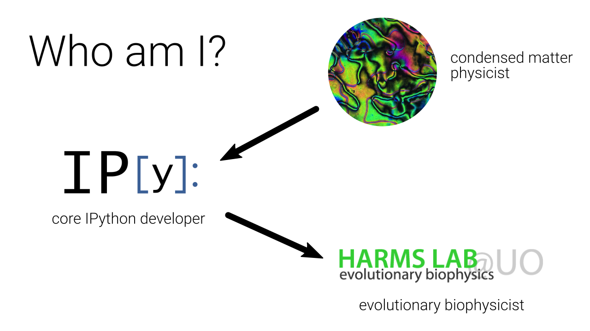
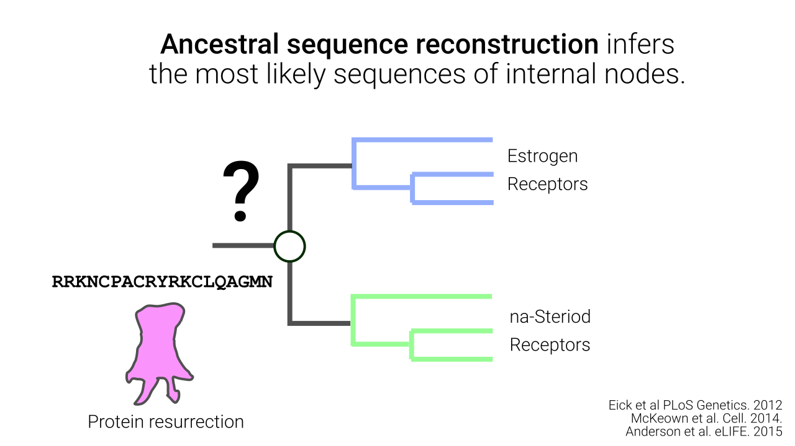
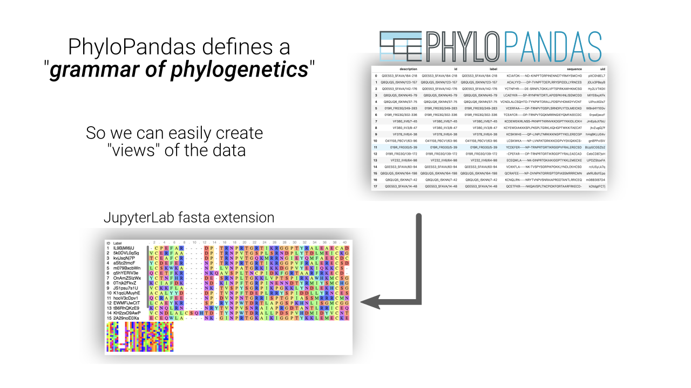
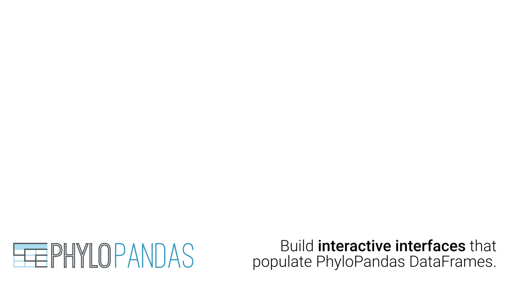
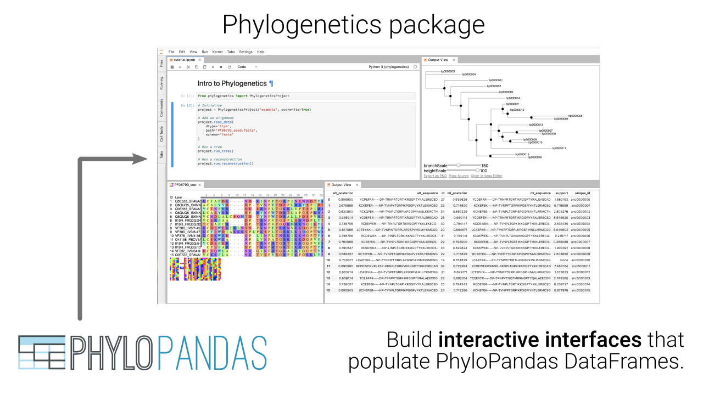

How ASR is done in real life.
- Manually (or custom script) BLAST to get sequences
- Align using MSAProbs or alignment software
- Manually edit alignment where software breaks down
- Construct a tree using RaxML, PhyML, etc.
- Resurrect ancestral node sequences.
Visualize FigTree
All software is unaware of other software
- Multiple sequence and tree formats.
Summarize the problems.
- multiple file formats describing the same data
- stitching together old software that needs compiling
- outdated interface.
- Not in Python!
Modern software to the rescue
- Bioconda
- BioPython
- DendroPy
- Visualize
These tools don't quite get us all the way there.
What do I (and maybe you) want?
- Less time spent converting file formats
- Familiar, interactive frontend for easy exploration
- Reproducible output.

See notebook




See notebook


See notebook
What do we learn from resurrecting SR proteins?
Conclusions
- It's time to make Phylogenetics interactive.
- PhyloPandas can help. Familiar interface (Pandas) and grammar for phylogenetics.
- We're working on interactive visualization tools powered by Vega.